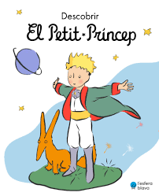

el pricipito:Ustedes son bellas, pero están vacías – agregó. – No se puede morir por ustedes. Seguramente, cualquiera que pase creería que mi rosa se les parece. Pero ella sola es más importante que todas ustedes, puesto que es ella a quien he regado. Puesto que es ella a quien abrigué bajo el globo. Puesto que es ella a quien protegí con la pantalla. Puesto que es ella la rosa cuyas orugas maté (salvo las dos o tres para las mariposas). Puesto que es ella a quien escuché quejarse, o alabarse, o incluso a veces callarse. Puesto que es mí rosa. 
habitos atomicos:El último día de mi primer año de bachillerato, un bat de beisbol
me golpeó en pleno rostro. Uno de mis compañeros intentó
hacer un movimiento largo para pegarle a la pelota, pero el bat
se le resbaló y voló hacia mí antes de golpearme directamente
entre los ojos. No conservo el recuerdo del momento justo
del impacto.
El bat me aplastó la cara de tal manera que la nariz se me
convirtió en una especie de letra u distorsionada. El golpe
literalmente provocó que el tejido blando de mi cerebro se
incrustara en la pared posterior del cráneo. De inmediato mi
cerebro comenzó a inflamarse como una ola expansiva que recorrió el interior de mi cabeza. Una fracción de segundo bastó
para que yo terminara con la nariz rota, con fracturas múltiples
en el cráneo y con las cuencas de los ojos hechas añicos.
Cuando abrí los ojos, pude ver a la gente a mi alrededor
mirándome fijamente y corriendo a ayudarme. Dirigí la mirada
caballeria roja:Florecen en torno, los campos de adormidera púrpura; el viento
sur juguetea en los centenos amarillos; el tierno trigo sarraceno
se recorta en el horizonte como el muro de un convento lejano.
La apacible Volinia se extiende a nuestro lado; ante nosotros
retrocede y se hunde en los bosques de abedules una niebla
nacarina que escala luego las cuestas floridas, prendiéndose con
sus tenues brazos a las ramas de lúpulo. El sol, de color naranja,
rueda por el horizonte como una cabeza cortada; en las
desgarraduras de las nubes se estremece una luz débil; sobre
nuestras cabezas tremolan los estandartes del ocaso; el olor de
la sangre vertida la víspera y el de los caballos muertos se filtra
en el frescor vesperal. El Sbrutch se oscurece, murmura y enlaza
los espumosos nudos de sus remolinos de agua. Como los
puentes están rotos, vadeamos el río. Sobre las ondas reposa la
luna mayestática. Los caballos se hunden en el agua hasta el
lomo, y la corriente culebrea murmuradora entre los centenares
de patas de los caballos. Un soldado que amenaza ahogarse
reniega brutalmente de la madre de Dios. Las manchas negras